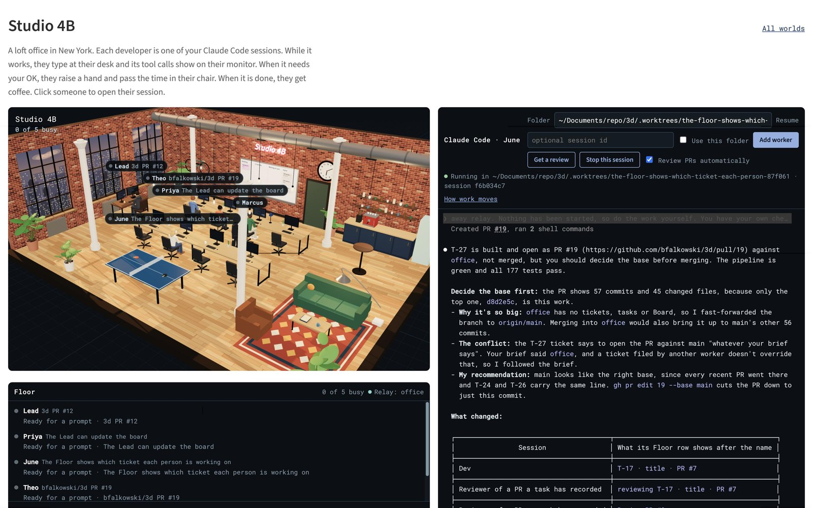
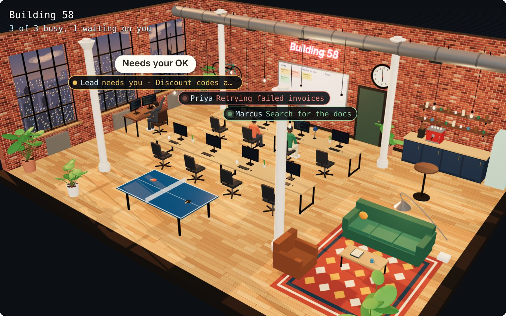
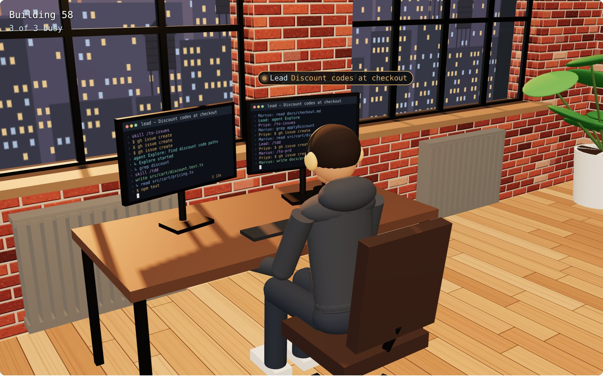
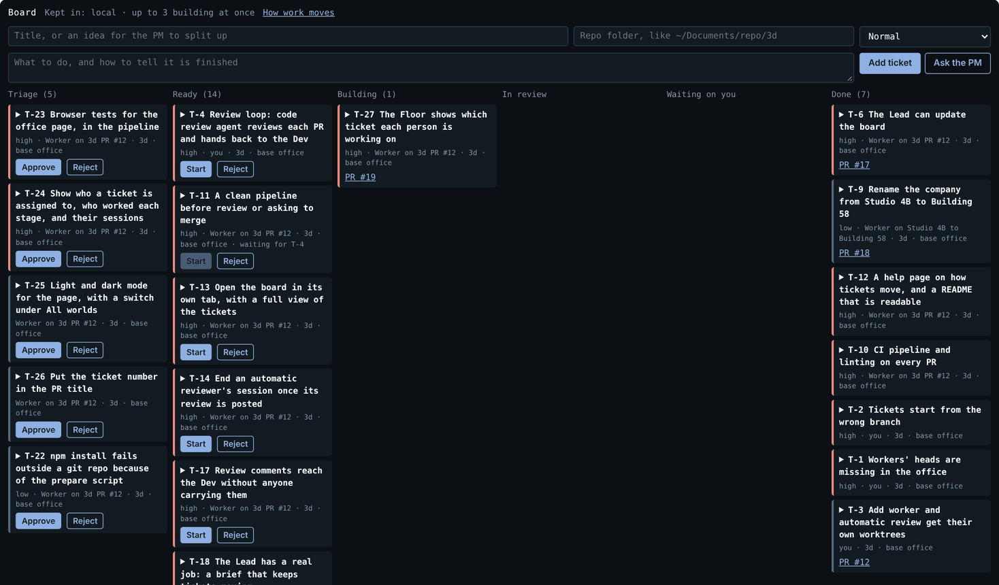

An Office for My Claude Code Sessions
My post on steering Claude Code without a keyboard left a gap. I run several Claude Code sessions at once, one per Terminal tab, and a tab does not tell me from across the room which session is waiting for me.
So I built an office. It is a 3D loft in New York with brick walls, steel windows and a coffee bar, and each developer in it is one of my Claude Code sessions. While a session works, its developer types at their desk with its tool calls on the monitor. When it needs my OK, they raise a hand. When its turn ends, they get coffee. I click a person instead of a tab.
By the afternoon the office was working on itself. Its sessions filed tickets, I approved them, and workers built them and reviewed each other's pull requests. This post covers what I built, how it works, and what I still decide myself.
The gap
In Steering Claude Code Without a Keyboard, I described running several agents at once, each in its own git worktree and its own Terminal tab. Getting to an agent took one press of a button. Knowing which one needed me was harder, because a tab shows a title and nothing else. Finding the session that was waiting meant clicking through the tabs.
The question I need answered most often is which session is waiting on me. A list of sessions can answer it, but a list is one more thing to read. I wanted something I could understand at a glance.
From skills to sessions
The office is the second world in a repo I already had. The first is the 1950s kitchen from my short story Doctor Bones, a 3D scene that code can drive through a small relay server. Curl, an Appian process model or an agent can send it commands. A Claude Code hook can send events the same way, so a world can show what a session is doing.
In my first version, each developer was one of Matt Pocock's skills. When the agent used /tdd, Marcus went to his desk. When it used /diagnose, Priya did. It looked good in the demo, but it did not hold up in real sessions. Most of a session is reads, edits and shell commands, not skills, so the Lead did all the work while everyone else drank coffee.
So I changed the model. Each developer is now a session. Add worker starts a new Claude Code session for a repo I pick, in its own checkout, and a developer goes to a desk for it. Clicking anyone opens their session in the terminal beside the office.

What the office shows
| In the office | In the session |
|---|---|
| Typing at their desk, with the tool calls on their monitor | Working |
| A raised hand, then passing the time in their chair | Waiting for permission, or for an answer in a question dialog |
| At the coffee machine, on the couch, at the window or at the ping pong table | Nothing is happening. The Floor list beside the office says whether the session is ready for a prompt or the person is free. |
| Free for another session. Anyone past the first three people leaves the office. | The session ended |
The raised hand is the part I use most. The browser tab's title counts the raised hands, so I can see that someone is waiting even when the office is in a background tab. While a worker waits, they stay in their chair and pass the time. They check their phone, swivel, lean back and look around, and the hand goes back up every so often.

Some of it is only for fun. Every few minutes a manager in a suit walks through, and anyone without real work sits down at a desk and looks busy until the manager leaves. A radio plays six old records that are a little out of tune. The org chart puts me at the top as the manager, and its Reorg button arranges everyone another way and says that nothing else changes. The company is called Building 58, which the rename pull request, written by a worker, describes as "a location inside the automated Ilium Works in Kurt Vonnegut's Player Piano".
How a session becomes a person
Claude Code runs hooks on events such as a prompt, a tool call, a permission request and the end of a turn. My hook sends a short summary of each event to the relay, and the relay passes it to the office page. The hook trims what it sends: skill names, file paths inside the project, the first two words of a shell command such as npm test, and the session's title. It does not send prompts unless I turn that on. It gives up on the relay after one second, and most events run it in the background, so it never slows Claude Code down.

Sessions started from the office run in a terminal panel beside the scene. The relay starts claude in a pseudo-terminal on my Mac, and the page shows it with xterm.js. A web page that can run commands on my computer is a risk, so the relay only answers the office page on the same computer. A request from another website, a tunnel or another computer is refused, even with the key.
Each session takes the first free desk. There are nine desks, so nine sessions can run at once. The browser remembers who had which session, so after a reload everyone is back at the same desk.
The office worked on itself
My first commit for the session version was at 9:25 in the morning. The first pull request opened at 10:02, and the last one merged at 5:18 in the afternoon. In between, 17 pull requests merged, with 35 commits that added about 6,500 lines.
The first pull requests came from sessions I opened and directed myself. Then the office got a Board, and from 2:12 in the afternoon on, most of the work came through it. A ticket waits in Triage until I approve it. When I press Start on a Ready ticket, the relay makes a copy of the repo, a new branch and a Claude Code session, and types the ticket in as the worker's brief. The worker builds it and opens a pull request. When the pull request opens, another worker starts as a reviewer and posts a review as a comment on it.
The first ticket was a bug in the office itself. After the waiting animation merged, every worker's head had disappeared. The angle a head turns to and the worker's appearance were both stored in a field called look, and the appearance overwrote the angle.
Sessions also filed tickets while they worked. Of the 27 tickets on the Board at the end of the day, I wrote 4 on the Board myself. One long-running session filed 15, and other sessions filed 8. For example, the reviewer of one pull request found that its clean-up step silently deleted gitignored files. The worker fixed that, and filed a ticket for the same bug in another part of the office. Every ticket a session files waits in Triage for me.

The automatic review of the rename to Building 58 is a good example of what the reviewers posted. It checked every place the company name appears, and measured the wider neon sign in headless Chrome to make sure it did not clip. It ended with a list of things for a person to check by hand, and it said plainly that it had not looked at the rendered office. To check that the new CI pipeline could fail, one worker opened a pull request that was meant to go red and was never merged.
I decide what moves
The help page, which one of the workers wrote, says it plainly: no ticket starts by itself. A ticket gets a worker only when someone presses Start. Nothing moves a card past Building, not even a merged pull request. Workers are told not to merge, so I merge on GitHub. At most three tasks are built at once.
In Who Owns the Process? I wrote about Lauren Tan's trust ladder. You give agents more as they prove themselves, and the proof comes from verification. The office started on the bottom rungs on purpose, and the first step up merged at the end of the day. With T-6, I can let one session, the Lead, move tasks and tickets too. It can do that only after I press Let the Lead move the board with its session on screen, and the same button takes it back.
The Ready column reads like the next rungs: review comments that reach the worker without anyone carrying them (T-17), a clean pipeline before review (T-11), and a Lead whose brief is to keep tickets moving (T-18). Each one hands another move from me to the agents. I want to start each one only when I have evidence that the checks before it catch what they should.
These rules are a check on the process, not a security boundary. "Told not to merge" means the words in a worker's brief. Sessions run with my normal permissions, and one could read the relay key from my hook settings. The token the relay gives each session only lets it list and file tickets, unless it is a Lead I have let move the board. A session that read the relay key would not need the token.
What I don't know yet
I have not measured whether the office makes me faster. It does answer the question it was built for, which session needs me. That leaves the hard question from that post. Sessions filed 23 tickets in an afternoon, and approving one costs a single click. That is the same pattern as the A button on the game controller: approving got cheap, and reading what I approve did not.
Three numbers would tell me whether the office helps:
- How long a raised hand waits before I answer.
- How often I reject a ticket from Triage.
- How many review findings turn into changes.
The relay already sees the events it needs for the first two.
Code
The code is in a private repo for now. The office runs locally and needs Node 18, python3 for the terminal, and Claude Code. Running it needs no packages to install.